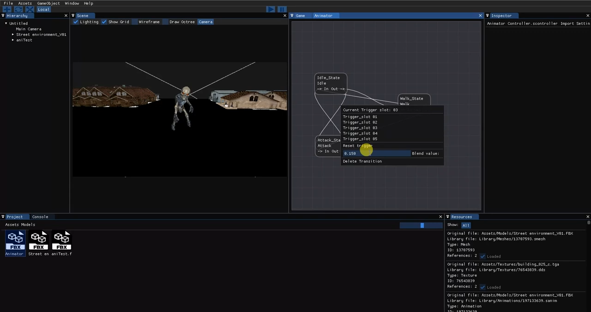
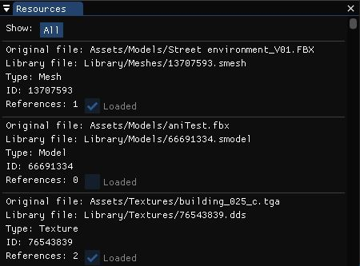
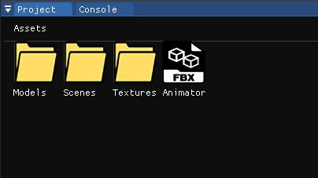
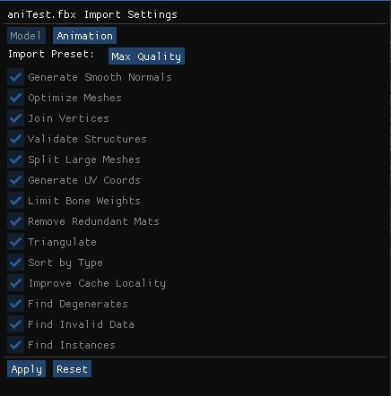
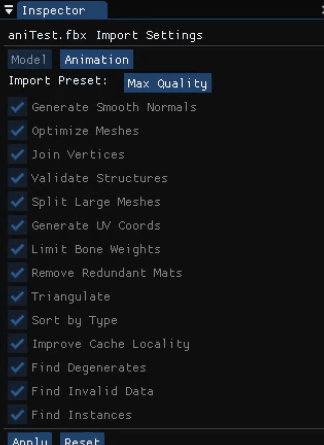
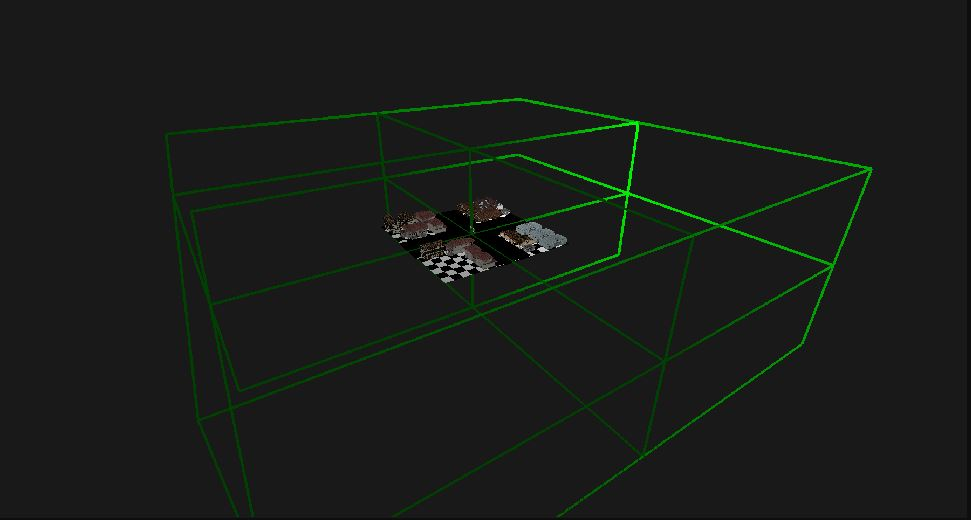

Spark Engine
Spark Engine is a 3D game engine developed by Marc Guillen and myself during the Game Development grade at CITM-UPC Terrassa for the subject "Game Engines". The entire development has been supervised by the lecturer Ricard Pillosu and all the code is written in C++ using OpenGL.

The structure of the engine is based on different modules, each one responsible for a specific task to make the engine work as a whole. Everything was coded from scratch, some parts my teammate and I coded together and others we had to split to achieve the final goal.
This was one of the hardest projects of the Game Development grade, since we had a lot of work, not much time and a lot of content to learn. Overall, the experience was succesfull, since we learned a lot from making this engine and gained a lot of experience working with OpenGl.
My contribution
To build an engine is an enormous task, and there were many different contributions to be done. Some of the ones I have done were:
Resource Management
- Save mesh, texture and models to own file format: Same as the scene, but this time with meshes, textures and models on our Library, this way we could efficiently save and load these type of files without occupying a lot of disk space.
- Module Resources (meta files, reference counting, etc): Make each asset have its own meta file which links the asset with the library file.
With this meta, we made it so upon start, all resources not in library get imported, if they have meta file, it gets imported with meta file info.
Also on start, all resources already in library get created from meta. Resources in library not linked to any meta get deleted on startup. On startup if meta file and resource file are not in same folder, it will move meta to resource folder and Reference counting to not load the same asset twice. - Project window: This window from the engine shows all the assets located in the current selected folder and allows to create new folderes, move assets between folders and delete the asset from the project.
- Resource Import settings: Following with the asset window, once an asset is selected, it will show it's import settings on the Inspector tab, allowing to change the way a mesh was imported or a texture settings.



Scene/Game
Animation Module
- Skinning: Very simple skinning method, without shader, to deform the mesh with the current bones.
- Bones import and Skeleton attachment: Importing bones from a model, saving them and then being able to link the root bone of the skeleton to it's gameobject in the scene for the future skinning.
- Animation import: Import animation files with each different type of key(position/rotation/scale) of each bone and saving it into binary file.
- Animation clips: Made it so from an animation file, we can cut it into different clips marking the initial frame and the end frame, to have each clip separated for proper use.
- Animator Controller file - Import/Save/Load: Converted the animator controller(file which contains animation states and transitions) into binary file which then can be imported to another project, saved, and loaded


Other Tasks
- Component info on Inspector: This shows relevant information of each Component on the Inspector window, to debug and change the values on the fly.
- Quadtree/Octree: We developed a Quadtree and then an Octree for static GameObjects to optimize the frustum culling for the rendering.
